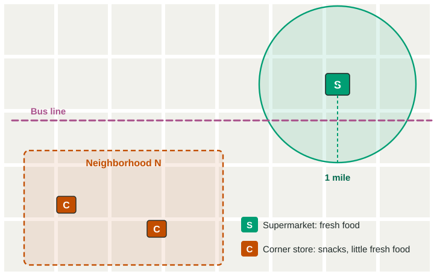

Challenges of Contemporary Agriculture
Farming faces debates over GMOs and aquaculture, and shoppers drive movements such as organic, local food, CSA, urban farming, value-added crops and fair trade.
Part 1 · Hook
Why this matters
Part 2 · Before you start
What this builds on
Part 3 · Prerequisite check
Quick check before you start
1. When did GMO crops spread widely on farms?
- In the late 1990s
- In the 1960s
- In the 1700s
- About 10,000 years ago
Show the answer
GMO crops came after the Green Revolution, in the late 1990s.
- Correct: In the late 1990s:
- In the 1960s:
- In the 1700s:
- About 10,000 years ago:
2. What does a global supply chain include?
- Every step and place from farm to consumer, across countries
- Just the ships that carry food
- Just the farms that grow food
- Just the stores that sell food
Show the answer
A supply chain is every step: growing, processing, shipping, storing and selling.
- Correct: Every step and place from farm to consumer, across countries:
- Just the ships that carry food:
- Just the farms that grow food:
- Just the stores that sell food:
Part 4 · See it
See it first

Part 5 · Step by step
How it works, step by step
- A neighborhood has no supermarket within a mile, and many families have low incomes and no carpeople buy much of their food at corner stores
- Corner stores sell little fresh foodfamilies eat fewer fruits and vegetables
- Residents start urban farms and a farmers marketfresh food becomes easier to get close to home
Part 6 · Key ideas
Key ideas
- Debates: GMOs (reviews found them safe to eat; critics cite seed patents, resistant weeds and control by a few firms) and aquaculture (food and income, but some habitat loss and pollution).
- Food-choice movements: organic, local food, community-supported agriculture, urban farming, value-added specialty crops, fair trade and dietary shifts.
- Food insecurity comes mostly from poverty, conflict, poor distribution and bad weather; a food desert is an area with poor access to affordable, healthy food.
Part 7 · Misconception
A common mistake
The wrong idea: People go hungry because the world does not grow enough food.
What actually happens: The world grows enough calories. Hunger comes mostly from poverty, conflict, poor distribution and bad weather that keep food from people.
Part 8 · Check yourself
Check yourself
Exam-style questions. Anything you miss goes into your review queue.
Image
An invented town: where fresh food is sold
1. Which concept does neighborhood N in the drawing most likely show?
- A food desert
- Community-supported agriculture
- Fair trade
- Aquaculture
Show the answer
A food desert is an area where people have poor access to affordable, healthy food, such as a neighborhood far from any supermarket.
- Correct: A food desert: Right: N is more than a mile from the only supermarket and has corner stores with little fresh food.
- Community-supported agriculture: CSA is a way of buying a share of a farm's harvest, not a place with poor food access.
- Fair trade: Fair trade is a system of minimum prices for producers, not a neighborhood.
- Aquaculture: Aquaculture is fish and shellfish farming.
2. The US Department of Agriculture counts an urban area as a food desert only if it is both far from a supermarket and low-income. What does the drawing NOT show that would be needed to decide?
- The distance from neighborhood N to the supermarket
- Where the corner stores are located
- The incomes of the people who live in neighborhood N
- Whether a bus line runs near the neighborhood
Show the answer
Reading a source includes seeing its limits. Distance alone is not the definition; income matters because families with cars or money can travel farther.
- The distance from neighborhood N to the supermarket: The 1-mile circle shows that N is beyond it.
- Where the corner stores are located: The C symbols show them inside N.
- Correct: The incomes of the people who live in neighborhood N: Right: the drawing shows distance and stores but says nothing about income.
- Whether a bus line runs near the neighborhood: The drawing shows the bus line.
3. Which change would most directly improve fresh-food access for people in neighborhood N?
- A second supermarket right next to the first one in the northeast
- Removing the bus line through the town
- More snack shelves in the two corner stores
- A weekly farmers market or farm stand in N
Show the answer
Local food movements, urban farms and new stores are common responses to food deserts. The bus line also matters for people without cars.
- A second supermarket right next to the first one in the northeast: That adds stores far from N, inside the area already served.
- Removing the bus line through the town: That makes it harder for people without cars to reach the supermarket.
- More snack shelves in the two corner stores: More snacks do not add fresh food.
- Correct: A weekly farmers market or farm stand in N: Right: it brings fresh food into the neighborhood itself.
Data
Three ways a farmer sells tomatoes
| How it is sold | Price the shopper pays (dollars) | Share of that price the farmer keeps | Distance the tomatoes travel (km) |
|---|---|---|---|
| Supermarket, through a long chain | 4.00 | 20% | 2,500 |
| Community-supported agriculture (CSA) share | 5.00 | 90% | 30 |
| Farmers market stall | 6.00 | 85% | 15 |
Invented data for practice.
4. According to the table, which way of selling gives the farmer the largest share of the price?
- The supermarket
- The CSA share
- The farmers market
- They give the same share
Show the answer
Direct sales cut out the middle steps of the chain, so the farmer keeps more of each dollar.
- The supermarket: The farmer keeps just 20% when selling through the supermarket chain.
- Correct: The CSA share: Right: the farmer keeps 90% of the price through the CSA.
- The farmers market: The farmer keeps 85% there, a little less than through the CSA.
- They give the same share: The shares are 20%, 90% and 85%.
5. What is food insecurity?
- Not having reliable access to enough safe, healthy food
- Growing crops with genes changed in a lab
- Paying a farm in advance for a share of its harvest
- Raising fish and shellfish in ponds or pens
Show the answer
Food insecurity is about access: a family may live near food but lack the money, transport or stable supply to get enough of it.
- Correct: Not having reliable access to enough safe, healthy food: Right: it includes hunger and also uncertainty about where the next meal will come from.
- Growing crops with genes changed in a lab: That describes GMO crops.
- Paying a farm in advance for a share of its harvest: That is community-supported agriculture.
- Raising fish and shellfish in ponds or pens: That is aquaculture.
6. In parts of Southeast Asia, coastal mangrove forests have been cleared to build shrimp ponds for export. Which statement weighs this aquaculture fairly?
- It has little effect on the coast because the shrimp live in ponds
- It harms the environment and produces no food or income
- It is the same as fishing in the open ocean
- It gives food and income but can harm habitat and water
Show the answer
Aquaculture now produces more aquatic animals than wild fishing (FAO, 2024, for 2022). It can ease pressure on wild fish but may cause habitat loss and pollution.
- It has little effect on the coast because the shrimp live in ponds: Clearing mangroves and pond waste both affect the coast.
- It harms the environment and produces no food or income: Shrimp farming provides food and jobs.
- It is the same as fishing in the open ocean: Aquaculture raises animals in controlled ponds or pens; fishing catches wild ones.
- Correct: It gives food and income but can harm habitat and water: Right: aquaculture has economic benefits and environmental costs.
Part 9 · Summary
Summary
Part 10 · Up next
What comes next
Part 11 · Connections